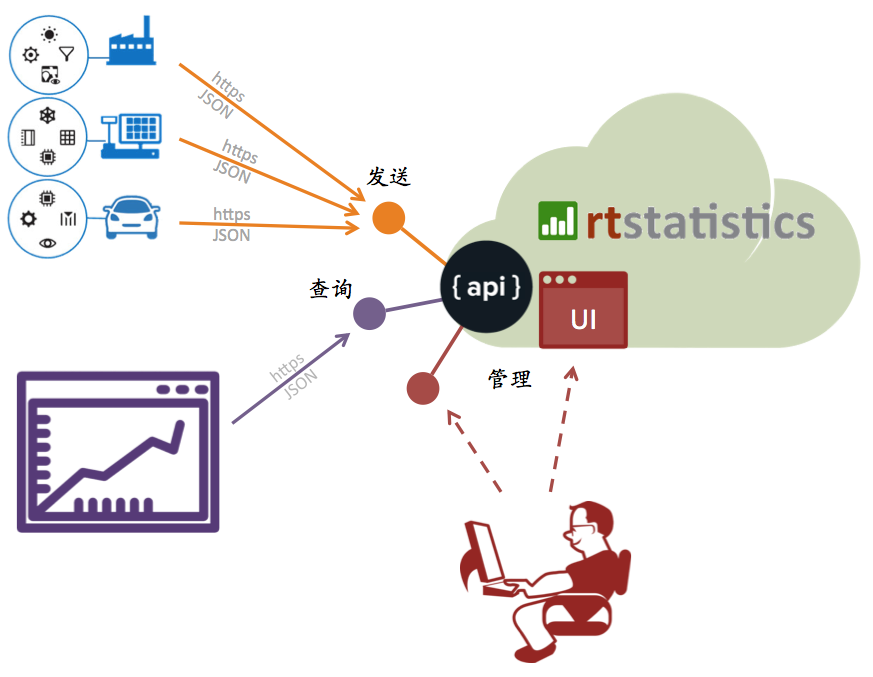
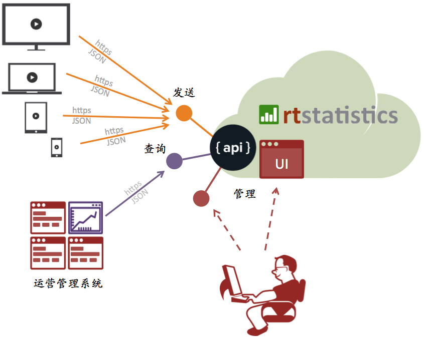
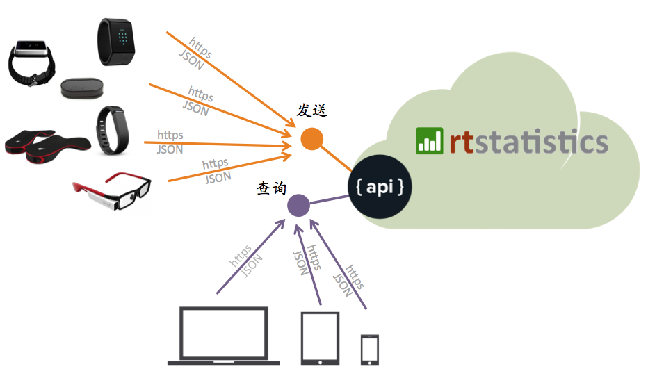
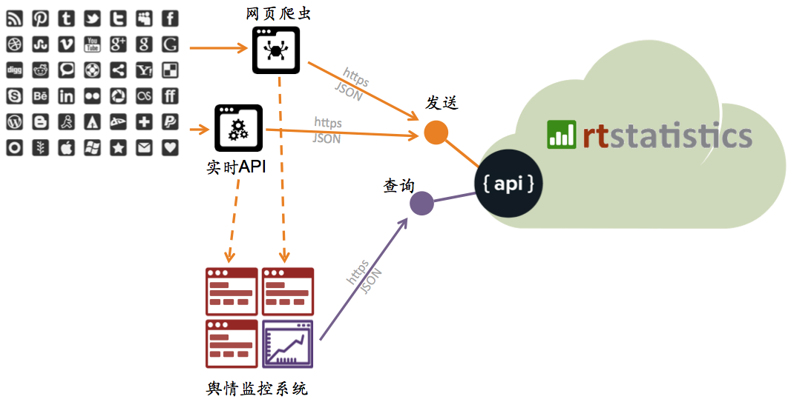

解决方案
rtstatistics.com提供真正实时的海量数据统计平台，它将海量数据的实时统计与快速的查询相结合，可以应用于不同行业的多种场景之中，从而给最终用户带来真正实时而且响应迅速的体验。
物联网数据实时统计
物联网（Internet Of Things)有几个特点：终端数目巨大、数据产生频度高、实时性强。常规的数据采集与处理系统往往无法同时满足这几个方面的需求，使得物联网的优势特点在实际应用中大打折扣。而rtstatistics.com的实时统计技术恰好与物联网数据的这几个特点完美匹配。
基于云计算技术的rtstatistics.com实时统计平台本身就是一个云服务。终端设备无需特殊的SDK，只需要能够通过HTTPS协议发送JSON格式的数据，就可以把数据实时地送达实时统计平台。而且平台有足够好的扩展性，完全可以满足海量数据的实时接收和处理要求。

视频播放效果实时统计
在媒体行业竞争已经非常激烈的今天，仅靠事后的点播数量统计已经显得太慢了。如果我们可以实时地针对各个栏目和节目看到有多少人在开始播放、多少人开始拖动进度条、多少人开启静音、多少人进入全屏、多少人停止播放，等等，那么我们就有可能根据这些实时反馈上来的统计信息进行调整。比如说调整节目的展现排序、通过社交网络工具上进行推荐和干预、甚至直接向用户推送小提示等等。
借助rtstatistics.com的实时统计技术，可以把来自播放客户端的各种事件进行汇总，汇总结果可以实时地展现给节目运营部门，帮助进行实时的节目运营调整。

可穿戴健康设备数据统计
可穿戴设备可以算是当今科技领域的时尚潮流，从计步到心率监测到睡眠质量监测，各种各样的传感器收集着来自使用者身体的各种数据。当用户量变得越来越大、数据采集频度变得越来越高的情况下，如何对这些实时数据进行实时地处理和统计并即时展现给每一个用户，就成为摆在设备厂商面前的现实问题。利用rtstatistics.com的实时统计平台，可以对海量的健康数据进行实时接收、实时统计，而且可以给终端用户提供即时响应的查询体验。

实时舆情监控
由于各种社交网络的流行，一条正面或负面的消息能够在几分钟之内就被广为传播。这对舆情监控提出了实时性的要求。rtstatistics.com的实时统计技术使得对于海量社交网络消息进行真正实时的统计成为可能。
这里有一个简单的真实演示：实时统计：在“askreddit”评论中提及特朗普的次数对比提及克林顿的次数

移动应用使用情况实时统计
移动应用被安装在手机或其它移动终端设备上，对其使用情况进行统计需要复杂的后端系统进行支撑。而每家公司的资源都是有限的，在这方面进行过多投入是不合算的。而rtstatistics.com基于云服务的实时统计平台可以为移动应用提供数据接收、自定义统计、统计处理、统计结果查询等服务。根据数据量大小，对于一般的移动应用来说这些服务是免费或低成本的。而且在移动应用里也无需特殊的SDK集成，只需要在移动应用里通过HTTPS将JSON格式的数据发送到这个平台上来就可以了。
这里有一个简单的真实演示：实时统计：手机应用LibBooks的使用情况
企业实时仪表板／报表
很多的企业都已经有了BI和／或数据仓库系统，但是数据从进入某个IT系统，到最终体现在管理者的仪表板／报表上，这之中的延时短则几十分钟，长则一天。在速度就是效益的年代，这显然已经不能满足企业的管理需求。通过将原始数据直接实时送达rtstatistics.com的实时统计平台，数据的端到端延时可以缩短到数秒钟（rtstatistics.com所带来的延时只有不超过1秒），从而大大提高管理者的响应速度和决策速度。
海量用户实时互动
在开展互动活动的时候，延时是最影响体验的。而当受众数量巨大的时候，对这些数据的及时汇总又是一个巨大的挑战。借助rtstatistics.com的实时统计平台，来自海量受众的反馈数据可以得到真正实时的汇总。而且，通过这个实时统计平台对汇总后的统计结果进行查询时，又可以获得极快的响应速度和极高的扩展性。从而对于参与互动活动的每一个人来说，他们可以实时地参与互动并实时地查看到所有人的互动结果。
如有任何的意见或者问题，欢迎发送邮件至：info@rtstatistics.com.